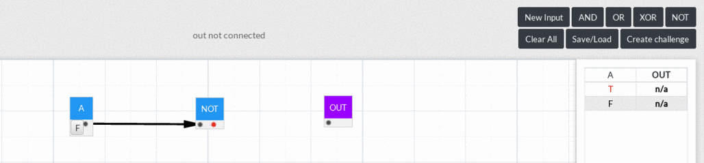

Add Input Nodes and Logic Gates
It is simple to add nodes. Just click on the corresponding button from the top right corner and the respective node would appear in the sandbox!
The inputs are labelled from A to H (8 Input Nodes) while the gates are labelled by their names for simplicity.
Make Connections
To connect two nodes, just click on the output (the right slot) of the node, drag and drop it on the input (the left slot) of another node. To remove them you just have to click on the connection. Remember, you can not connect incorrect slots or create cycles.
Remove Nodes
Sometimes having unnecessary inputs and gates lurking around in the sandbox can be annoying and confusing, which is why we need a way to get rid of them. Right clicking on the nodes does the trick.
Be careful because removing nodes could break your circuit!
Colours
Input nodes are always blue but logic gates are violet when spawned. Upon sufficient inputs connected to them they turn blue. Same is true for OUT too. It turns blue when a valid logic circuit is created and connected to it.
A connection is black if the input it is drawn from represents FALSE, red for TRUE.
Truth Table
As logic gate circuits keep getting more complex, it is only human to lose track of what they were supposed to represent and become confused. This has been simplified for you as a neat boolean expression is generated above the sandbox along with a truth table for you to stare at and get more confused.

How to save your circuits?
In a moment of haste like the building catching fire or a meteor strike it is imperative to save your logic gate circuits. To ensure this functionality there is a 'Save/Load' button that one should take advantage of. Make sure you are logged in before attempting to save your circuits.

How to load your circuits?
Loading your previously saved circuits is simple. Just go to Save/Load, select your circuit from the drop-down menu and click on Load.
Alternatively you can copy the circuit code that your friend sends you over.